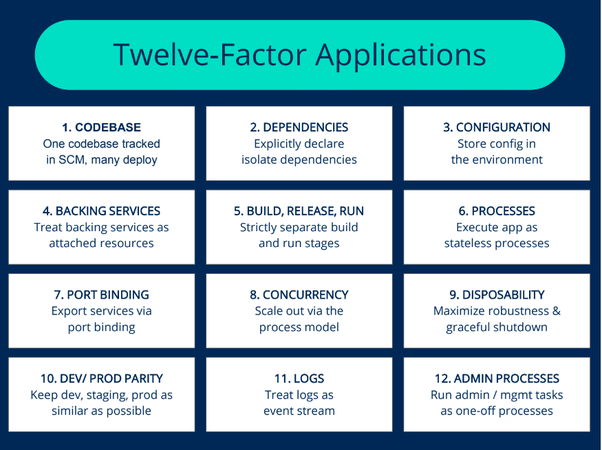

Les applications spring boot s'installent assez facilement dans le cloud.
Il y a de nombreux acteurs pour déployer des applications dans le cloud.
Les principaux sont Amazon (AWS), Microsoft (Azure) et Google (Google Cloud Platform)
Amazon est très clairement le leader dans ce domaine.
Son offre est très large https://aws.amazon.com/fr/
La partie PAAS (Plateforme As A Service) est AWS Beanstalk
Malheureusement, il faut une carte de crédit afin de créer un compte et faire un test.
Nous allons donc nous tourner vers une offre plus accessible pour un TP.
Si vous souhaitez faire un test sur AWS, voici 2 guides (parmi d'autres) :
Heroku est une solution PAAS depuis plus de 10 ans initialement lancée pour héberger des applications en Ruby.
Aujourd'hui, Heroku support Ruby, Java, PHP, Python, Node, Go, Scala and Clojure
➤ Créez vous un compte sur heroku
➤Installez le CLI (command line interface) de Heroku
➤ Verifiez l'installation
$ heroku --version
heroku/7.35.0 darwin-x64 node-v12.13.0➤ Puis logguez vous
$ heroku login
heroku: Press any key to open up the browser to login or q to exit:
Opening browser to https://cli-auth.heroku.com/auth/browser/c8854711-f674-4bf1-b715-8343cc9342ee
Logging in... done
Logged in as email@example.org➤ Créez une app spring boot qui dit bonjour sur /
Heroku utilise un repository git afin de stocker les versions de l'application.
➤ Dans votre répertoire projet, initialisez un projet git
$ git init
Initialized empty Git repository in /Users/dbourdette/projects-ecm/cloud-demo/.git/➤ Pour le moment, tous les fichiers sont untracked
$ git status
On branch master
Initial commit
Untracked files:
(use "git add <file>..." to include in what will be committed)
.gitignore
build.gradle
gradle/
gradlew
gradlew.bat
settings.gradle
src/
nothing added to commit but untracked files present (use "git add" to track)➤ Ajoutez tout et faites un premier commit
$ git add .
warning: CRLF will be replaced by LF in gradlew.bat.
The file will have its original line endings in your working directory.$ git commit -m "initial commit"
[master (root-commit) a7b01dd] initial commit
11 files changed, 355 insertions(+)
create mode 100644 .gitignore
create mode 100644 build.gradle
create mode 100644 gradle/wrapper/gradle-wrapper.jar
create mode 100644 gradle/wrapper/gradle-wrapper.properties
create mode 100755 gradlew
create mode 100644 gradlew.bat
create mode 100644 settings.gradle
create mode 100644 src/main/groovy/fr/ecm/cours/cloud/clouddemo/CloudDemoApplication.groovy
create mode 100644 src/main/groovy/fr/ecm/cours/cloud/clouddemo/IndexController.groovy
create mode 100644 src/main/resources/application.properties
create mode 100644 src/test/groovy/fr/ecm/cours/cloud/clouddemo/CloudDemoApplicationTests.groovyIl existe aussi un plugin gradle pour heroku.
Mais nous allons utiliser la méthode standard git.
➤ Toujours dans le répertoire du projet, créez l'app sur heroku
$ heroku create --region eu
Creating app... done, ⬢ powerful-citadel-13916, region is eu
https://powerful-citadel-13916.herokuapp.com/ | https://git.heroku.com/powerful-citadel-13916.gitLe CLI a choisi un nom d'application et branché le repository git distant
$ git remote -v
heroku https://git.heroku.com/powerful-citadel-13916.git (fetch)
heroku https://git.heroku.com/powerful-citadel-13916.git (push)Vous pouvez renommer l'application via la commande heroku apps:rename
➤ Poussez l'application directement sur la branche distante master
$ git push heroku master
Counting objects: 31, done.
Delta compression using up to 4 threads.
Compressing objects: 100% (17/17), done.
Writing objects: 100% (31/31), 54.73 KiB | 0 bytes/s, done.
Total 31 (delta 0), reused 0 (delta 0)
remote: Compressing source files... done.
remote: Building source:
remote:
remote: -----> Gradle app detected
remote: -----> Spring Boot detected
remote: -----> Installing JDK 1.8... done
remote: -----> Building Gradle app...
remote: -----> executing ./gradlew build -x test
remote: Downloading https://services.gradle.org/distributions/gradle-5.6.4-bin.zip
remote: .........................................................................................
remote: > Task :compileJava NO-SOURCE
remote: > Task :compileGroovy
remote: > Task :processResources
remote: > Task :classes
remote: > Task :bootJar
remote: > Task :jar SKIPPED
remote: > Task :assemble
remote: > Task :check
remote: > Task :build
remote:
remote: BUILD SUCCESSFUL in 32s
remote: 3 actionable tasks: 3 executed
remote: -----> Discovering process types
remote: Procfile declares types -> (none)
remote: Default types for buildpack -> web
remote:
remote: -----> Compressing...
remote: Done: 69.7M
remote: -----> Launching...
remote: Released v3
remote: https://powerful-citadel-13916.herokuapp.com/ deployed to Heroku
remote:
remote: Verifying deploy... done.
To https://git.heroku.com/powerful-citadel-13916.git
* [new branch] master -> master➤ L'application devrait être disponible
$ heroku open➤ Et les logs également
$ heroku logs --tailIl est possible de configurer l'application de différentes façons :
Le CLI permet d'administrer notre application :
$ heroku help
CLI to interact with Heroku
VERSION
heroku/7.35.0 darwin-x64 node-v12.13.0
USAGE
$ heroku [COMMAND]
COMMANDS
access manage user access to apps
addons tools and services for developing, extending, and operating your app
apps manage apps on Heroku
auth check 2fa status
authorizations OAuth authorizations
autocomplete display autocomplete installation instructions
base
buildpacks scripts used to compile apps
certs a topic for the ssl plugin
ci run an application test suite on Heroku
clients OAuth clients on the platform
config environment variables of apps
container Use containers to build and deploy Heroku apps
domains custom domains for apps
drains forward logs to syslog or HTTPS
features add/remove app features
git manage local git repository for app
help display help for heroku
keys add/remove account ssh keys
labs add/remove experimental features
local run Heroku app locally
logs display recent log output
maintenance enable/disable access to app
members manage organization members
notifications display notifications
orgs manage organizations
pg manage postgresql databases
pipelines manage pipelines
plugins list installed plugins
ps Client tools for Heroku Exec
psql open a psql shell to the database
redis manage heroku redis instances
regions list available regions for deployment
releases display the releases for an app
reviewapps manage reviewapps in pipelines
run run a one-off process inside a Heroku dyno
sessions OAuth sessions
spaces manage heroku private spaces
status status of the Heroku platform
teams manage teams
update update the Heroku CLI
webhooks list webhooks on an appOn peut par exemple ajouter une base postgres ou bien augmenter le nombre de serveurs pour notre application.
Pour faire de la production, il faudrait bien sûr augmenter la capacité et commencer à payer.
Les 12 Facteurs (Twelve Factor) sont 12 règles afin de construire des applications cloud ready.
Elles ont été établies par Adam Wiggins (un co fondateur de Heroku) en 2011
Elles sont fondatrices de la mentalité de découpage en microservices.
Ce que nous avons fait est très bien pour débuter.
Cependant pour piloter des centaines de serveurs, il est utile de faire appel à des outils plus puissants.
Kubernetes est un orchestrateur : il permet de piloter le déploiement de conteneurs.
En pratique, ce sont souvent des conteneurs Docker.
Les applicatons spring boot (comme n'importe quelle autre type d'application) doit donc être packagée en image Docker.
Ce modèle offre une uniformisaton du modèle de déploiement et de contrôle des applications.
home{kind=link}
{kind=link}